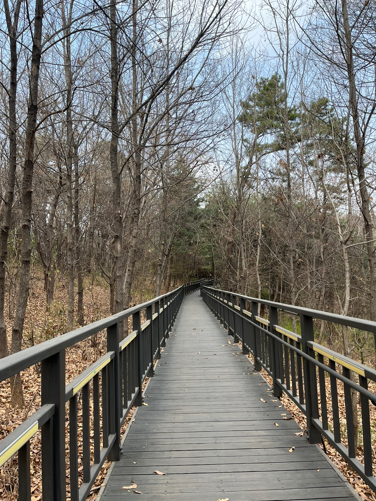
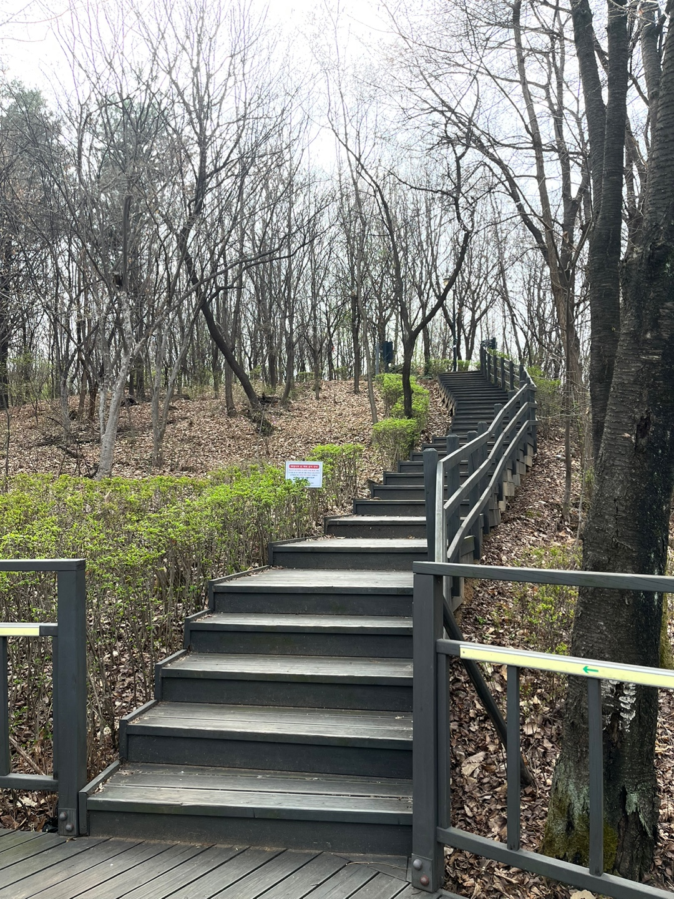
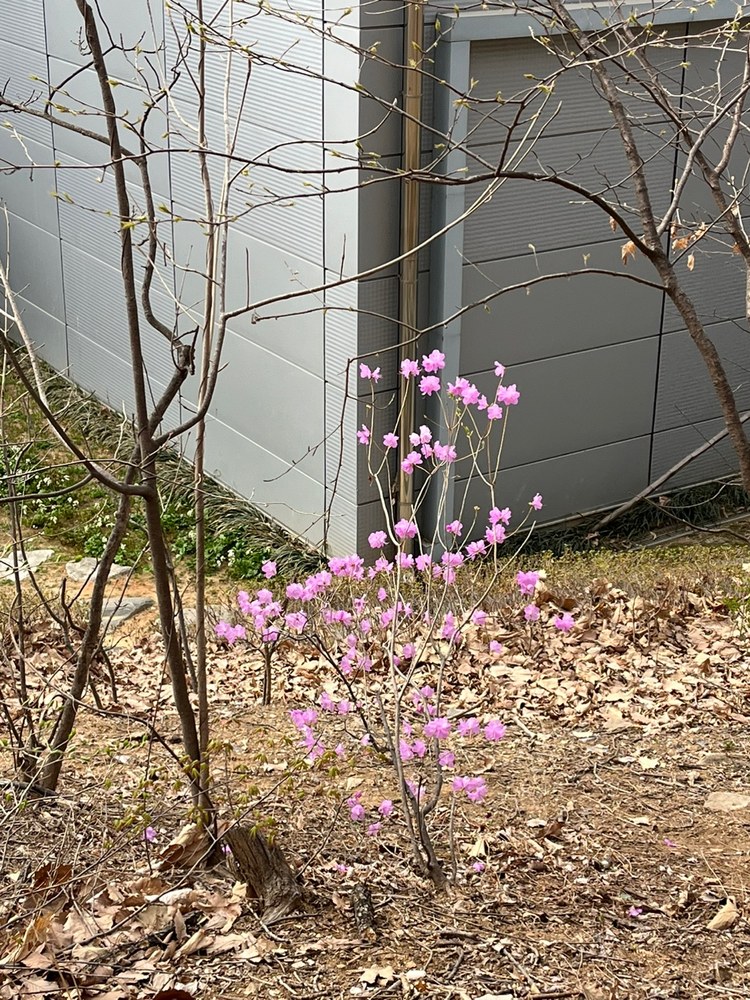
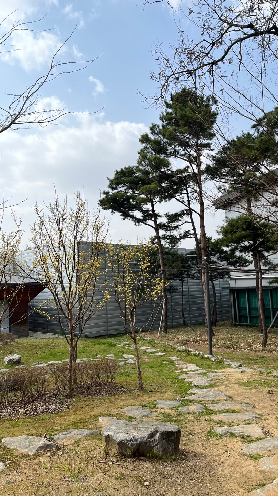

기획 의도
역사에 관심이 많은 대학생들이 함께 모여 유적지인 경주를 탐방하며 역사에 대한 흥미와 지식을 공유할 수 있는 기회를 마련하고자 합니다. 봄의 따뜻한 날씨 속에서 과거의 흔적을 따라 걸으며, 의미 있는 교류와 배움을 추구하는 여행입니다.
인스타그램 방문하기

역사에 관심이 많은 대학생들이 함께 모여 유적지인 경주를 탐방하며 역사에 대한 흥미와 지식을 공유할 수 있는 기회를 마련하고자 합니다. 봄의 따뜻한 날씨 속에서 과거의 흔적을 따라 걸으며, 의미 있는 교류와 배움을 추구하는 여행입니다.
인스타그램 방문하기
걷기에 불편하지 않은 복장, 음료
pm 2:00 - 5호선 고덕역 도착
pm 2:10 - 자락길 입구로 진입
pm 2:10~2:30 - 산책 및 20문 20답 진행
지하철 - 5호선 고덕역 3번출구 또는 5호선 상일동역 1번출구
버스 - 342(고덕주공3단지 하차), 3411(고덕주공3단지 하차), 3413(E마트 앞 하차), 3412(고덕역 하차), 340(고덕평생학습관 하차)
고덕역 쪽에서 출발하여 샘터공원쪽으로 나오는 코스입니다.
자락길 진입 - 고덕산 자락길은 쭉 이런 데크로드로 이루어져 있습니다. 걸어가 보겠습니다.

걷다보면 숲길에서 동물 친구들을 마주칠 수 있습니다. 고양이 외에도 청설모같은 무언가를 본 것 같은데 아쉽게 사진에는 담지 못했습니다.
걷다 보면 약간의 계단 코스도 있습니다.
샘터근린공원쪽으로 나오니 꽃이 피어있습니다.
코스의 끝부분인 샘터근린공원이 나왔습니다. 벤치와 정자가 있어 잠깐 쉬다갈 수도 있습니다.
과제를 통해 일상에서 벗어나 숲길을 산책하고 같이 수업을 듣는 학우와 대화할 수 있어서 좋았습니다. 조금 아쉬웠던 점은 3월 말에 이곳을 방문해서 아직 나무에 잎이 나지 않은 다소 황량한 상태였다는 것입니다. 이곳을 방문하실 분들은 5월 이후에 방문하면 좀 더 파릇파릇한 숲의 모습을 볼 수 있으실 겁니다!
서울의 근교산자락길 고덕산 자락길을 소개합니다.
고덕산 자락길은 서울 강동구 고덕산 내에 위치한 자락길로 전체길이 700m로 가볍게 걷기 좋은 완만한 도심 속 숲길입니다.
선정 이유 : 지하철과 버스로 접근이 쉽고 20분 정도의 완만한 코스라 가볍게 걷기 좋을 것 같아 선정하였습니다.